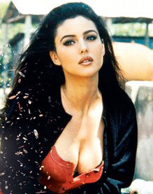
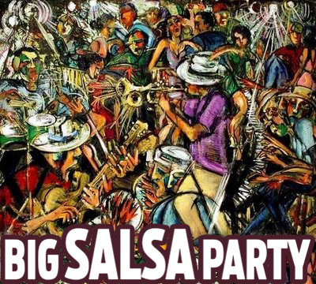
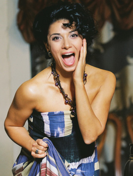
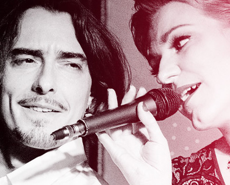
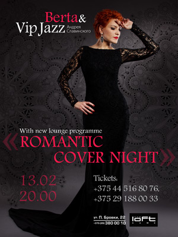
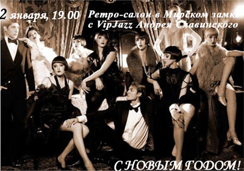

Итальянская вечеринка сезона "Illy italian party"
 7 августа 21:00 кофейный бренд Illy совместно с летней верандой "La Terrazza" подготовили для Вас самую итальянскую вечеринку сезона "Illy italian party"
Illy - это всемирно известный элитный кофе с более чем 70-летней историей, который добился больших достижений в области производства кофе.
Вас ожидает конкурс и мастер-класс от Illy. А также мастер-класс от неповторимого шеф-повара Марко Якетта, который продемонстрирует Вам приготовление блюд на основе кофе. Атмосферу украсит VIP JAZZ от Андрея Славинского и Dj-set от одного из лучших диджеев Беларуси DJ Selebriuma. Ведущий Василий Степанов.
Big Salsa Party в Loft Café
Мы так долго ждали лета, солнца и жарких летних ночей, чтобы пить коктейли, наслаждаться музыкой и кружиться в танцах со всей страстью, которая у нас есть. Не нужно ждать лета!
Все это можно искренне и страстно сделать 16 мая на Big Salsa Party в Loft Café.
Две части, два формата, две страсти!
19.00-21.45 - танцевальные мастер-классы
21.45-22.15 - шоу-программа
Viva La Cuba Librе! – 22.15
"Весенние ритмы Нью-Йоркского Джаза"
25 апреля в 20.00 в клубе "Поющие фонтаны" (Октябрьская, 5) состоится очередное заседание Vip Jazz клуба Андрея Славинского c участием прекрасной Искуи Абалян, которая представит уникальную программу "Весенние ритмы Нью-Йоркского Джаза".
Специальный гость - замечательный вокалист, композитор и музыкант Петр Клюев.
Атмосферу поддержит харизматичная Berta.
Множество музыкальных сюрпризов и хорошее настроение гарантируется.
Приглашаем всех!
Women’sday. Денис Дудинский (DaVinci), Berta & VipJazz в совместной программе 8 марта
Приглашаем вас отметить 8 марта в необычной компании: вместе с Денисом Дудинским из группы DaVinci, Бертой и VipJazz Андрея Славинского. В этот вечер мы подготовили для вас нестандартную музыкальную программу Women’sday, которая придется по душе всем любителям сюрпризов и хорошей музыки.
Новая лаунж-программа от Berta & Vip Jazz Андрея Славинского
Приглашаем всех на презентацию новой лаунж-программы
от Berta & Vip Jazz Андрея Славинского. Окунитесь с головой в чарующие звуки музыки в преддверие дня всех влюбленных. Если вы влюблены или хотите влюбиться, вам - к нам. Мы покажем, каким разным может быть джаз: возьмем немного ледяного холода
чистых нот, добавим огненной страсти живого звучания и приправим острым перцем волнующих импровизаций.
Потому что мы знаем толк в классной музыке и любим доставлять людям радость.
13 февраля 2015 г.в 20:00
"Loft cafe", ул. П. Бровки, 22, Минск
Специальный гость - Денис Дудинский, Da Vinci
Tickets:
+375445168076; +375291880033
100 000 - танцпол; 150 000 - столик
Welcome drink!
Джаз трио
Выступление в стиле
Джаз трио с музыкантами:
Владимир Белов - бас,
Дмитрий Хоменко - пиано,
Андрей Славинский - ударные.
21 января, cреда в 21:30
Doodah King Bar
Ретро-салон в Мирском замке с VipJazz Андрея Славинского
Vip Jazz Андрея Славинского поздравляет вас с Рождеством и Новым годом! И приглашает встретить Новый год феерично - на Ретро-салоне в Мирском замке 2 января!